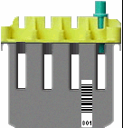

This procedure describes how to adjust the position of the dual-gantry sample pipettor probe relative to the wash tower, the sample storage module, and the sample presentation unit (SPU) before performing alignments on the sample pipettor.
Required Materials:
Sample pipettor to SPU adjustment tool
Green vessel-shaped adjustment tool
Low volume sample rack
The dual-gantry sample pipettor interacts with the sample presentation unit (SPU), sample storage module, and the wash tower. The dual-gantry pick-and-place interacts with the SPU, sample storage module, and the AV transfer shuttle.
Adjustments for this module include:
Adjust sample pipettor to wash tower position
Adjust sample pipettor to sample storage module position
Adjust sample pipettor to SPU position
Adjust dual-gantry pick-and-place to sample storage module position
Adjust dual-gantry pick-and-place to SPU position
Figure 262: Top plate of universal tower
Prepare the instrument.
Loosen, but do not remove, the six screws securing the sample pipettor towers to the base plate (four on the front tower, two on the rear tower).
Open the upper left front cover and insert a cover interlock switch bypass.
From the Main Menu, select
Diagnostics > Device Diagnostics > Mechanics > Alignments.
Adjust sample pipettor to SPU and sample storage positions (universal tower).
Select
Sample Pipettor as the device.
Select
Motors > Disable Both Motors.
Select
SPU Presentation Tray as the device,
Onload Position as the position, and select
Move X/Y to Position.
Place the sample pipettor adjustment tool in position 4 of a sample rack. Place the rack in the pipetting position (left side) of the SPU tray, and select
Home Device.
Move the sample pipettor to the center of the tool in the sample rack. Use a slotted screwdriver to rotate the concentric screw on the top plate of the towers to center the sample pipettor probe over the crosshair in the alignment tool.
Move the sample pipettor to the center of the front slot opening in the cover of the sample storage module. Use a slotted screwdriver to rotate the concentric screw on the top plate of the towers to center the sample pipettor probe over the slot in the cover.
When the adjustments are correct, tighten the four locking screws securing the sample pipettor towers to the top plates.
Recheck the adjustments by moving the pipettor between the two adjustment locations.
If the adjustments are correct, select
Move X/Y to Position, and remove the sample rack from the SPU tray.
If the adjustments are incorrect, repeat the adjustment procedure.
Adjust dual-gantry pick-and-place to SPU and sample storage positions.
Place the green vessel-shaped alignment tool into position 4 of a low-volume sample rack.
Note: A low-volume sample rack is required for this adjustment. If this rack is not available, then skip this adjustment and proceed to adjust pick-and-place to sample storage module cover position.

Install the rack in the pipetting position (left side) of the SPU presentation tray, and then select
Home Device to move the tray to the pipetting position.
Select
Dual Gantry P&P
as the device option, and then select
Motors
> Disable Both Motors.
Using a slotted screwdriver to rotate the concentric screw on the top plate of the front universal tower, adjust the pick-and-place x-axis and center the pick-and-place over the alignment tool.
Note: It might be necessary to adjust the rear universal tower (concentric) to center the probe over the alignment tool.
Move the pick-and-place to the rear slot opening in the sample storage module cover.
Note: The pick-and-place only accesses the rear slot of the sample storage module cover.
Using a slotted screwdriver to rotate the concentric screw on the top plate of the rear universal tower, adjust the pick-and-place x-axis and center the pick-and-place in the rear slot of the sample storage module cover.
Note: It might be necessary to adjust the front universal tower (concentric) to center the pick-and-place over the cover slot.
Move the pick-and-place along the y-axis of the slot to verify that it is centered in all locations.
Complete the adjustment.
Tighten the four locking screws to secure the top plates to the front and rear universal towers.
Recheck the adjustments by moving the sample pipettor and pick-and-place to their adjustment positions.
If the adjustments are incorrect, repeat the adjustment procedure.
If the adjustments are correct, remove the sample rack and proceed to the next step.
Adjust sample pipettor to wash tower position.
Loosen, but do not remove, the two screws securing the sample pipettor wash tower to the mounting plate.
Move the sample pipettor probe to the wash tower.
Adjust the wash tower x-axis to center the wash tower under the sample pipettor probe.
Securely tighten the wash tower mounting screws.
Recheck the adjustment.
If the adjustments are incorrect, repeat the adjustment procedure.
If the adjustments are correct, select
Motors
> Enable All.
If any adjustments were made, then perform all the dual-gantry sample pipettor alignments.